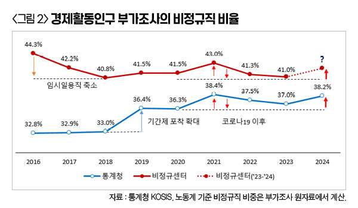
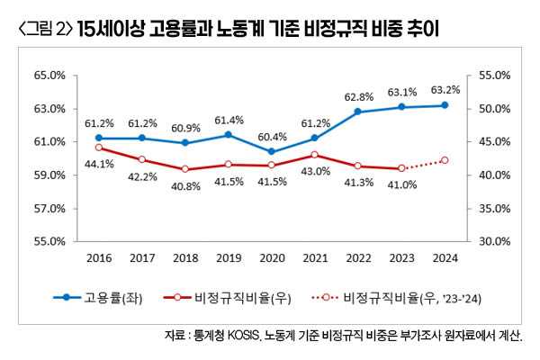
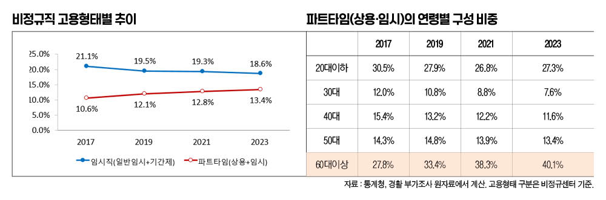

박영삼의 통계로 보는 노동
높아진 비정규직 비율, 노동계 기준도 42% 넘을 듯
‘고용률 증가, 비정규직 감소’ 흐름 끝나고 2017년 8월 이전 수준으로 후퇴
통계청이 지난 22일 경제활동인구조사 근로형태별 부가조사 결과를 발표했다. 올해 8월 기준 임금근로자 중 비정규직 비율은 38.2%로 지난해(37.0%)에 비해 1.2%포인트나 증가한 것으로 나타났다. 코로나 사태의 충격으로 고용이 급감한 뒤 비정규직 중심의 고용회복이 이뤄졌던 2021년 8월에 38.4%로 최고치를 기록했던 것에 육박하는 수치다. 2년 연속 감소세를 기록하던 비정규직 비율도 다시 상승세로 돌아섰다.
역대 2위 비정규직 비율은 아니더라도…
다수 언론에서는 이를 놓고 통계청이 관련 통계를 작성하기 시작한 2003년 이래 역대 두 번째로 높은 비정규직 비율이라는 보도를 쏟아내기도 했다. 2021년 8월의 38.4% 다음으로 높은 수치이기 때문이다. 하지만 통계청 수치만 놓고 이런 평가를 내리는 것은 다소 무리가 있다. 통계청이 2019년 경활 부가조사 문항을 개편하면서 비정규직을 3.5%포인트가량 더 포착하게 된 상황에서 조사방법 개편 이전과 이후의 시계열을 단순 비교하는 것은 적절하지 않기 때문이다. 다만 통계청의 기준변경으로부터 영향을 받지 않는 노동계의 기준으로는 좀 더 긴 시계열 비교도 가능하다.
통계청 부가조사의 원자료는 11월 중순에나 공개될 예정이기 때문에 노동계 기준에 따른 비정규직 규모를 현재로서는 정확히 말하기 어렵다. 하지만 정부와 노동계의 비정규직 통계 차이가 4～5%포인트 수준으로 간극이 크게 줄었다. 증감 방향도 완전히 같아졌기 때문에 이제는 정부가 발표한 통계치로 노동계 기준 비정규직 비중도 어느 정도 예상치를 맞춰 볼 수 있게 됐다.<본지 2023년 12월22일자 “‘비정규직 통계’ 뜨거운 공방은 옛말, 노동계-정부 차이 거의 사라져” 기사 참조>
이전과 동일한 방법을 적용해 보면 노동계 기준에 따른 올해 8월 비정규직 비중은 42%를 약간 웃도는 수준에서 추정치가 나올 것으로 예상해볼 수 있다. 그리고 이 수치대로라면 42.2%의 비정규직 비율을 보였던 2017년 8월 이전 수준으로 후퇴한 것으로 평가할 수 있다.

고용률·비정규직 비중 동시 개선 어려워져
한국비정규노동센터의 기준을 사용해서 2024년 추정치까지 감안한 비정규직 비중의 변화를 살펴보면, 지난해까지는 고용률이 상승하는 상황에서 비정규직 비중이 감소하는 방향으로 움직이다가, 올해 들어 고용률 상승은 미미해지고 비정규직 비중이 크게 증가하는 양상으로 흐름이 바뀌었다고 할 수 있다.
<그림 2>를 보면 2023년까지는 고용률 상승과 비정규직 비중 감소가 뚜렷했다. 2021년 61.2%로 회복됐던 고용률은 2022년에는 62.8%로 코로나 사태 발발 이전인 2019년의 61.4%를 훨씬 넘어서는 수준으로 상승한 것을 확인할 수 있다. 같은 기간에 노동계 기준 비정규직 비중은 43.0%에서 41.3%, 41.0.%로 2년 연속 감소한 것으로 나타난다. 하지만 올해는 고용률 상승폭은 0.1%포인트 수준으로 미미해진 반면 비정규직 비율의 증가폭은 1%포인트를 넘을 것으로 예측된다. 이렇게 보면 최근의 고용률 상승은 대부분 비정규직 증가로 이뤄졌다고 볼 수 있고, 그만큼 앞으로의 고용상황 개선은 기대하기 어려울 것이라는 판단을 갖게 만든다.

파트타임, 청년 일자리에서 고령자 일자리로 변화
비정규직 고용형태 가운데 비중이 가장 크게 늘어난 것은 파트타임이었고, 파트타임 비정규직 안에서 가장 큰 비중을 차지하는 연령대는 60대 이상이 압도적이었다. 노동계 기준 비정규직이 2016년 43.8%에서 2023년 41.0%로 2.8%포인트 감소할 때 파트타임은 9.7%에서 13.4%로 오히려 비중을 크게 늘렸다. 한편 파트타임의 연령별 구성에서는 2016년에는 20대 이하가 30.7%로 가장 큰 비중을 차지했지만, 2023년에는 60대 이상의 비중이 40.1%로 가장 많았다. 2021~2023년 경제성장률이 각각 4.3%, 2.6%, 1.4%로 하향 조정되는 과정에서 파트타임으로 쪼개진 일자리를 고령자들이 나눠 메운 결과라고 볼 수 있다.

경제활동인구의 구성만 놓고 본다면 앞으로의 전망도 밝지 않다. 지금까지는 60대로 신규진입하는 은퇴세대의 노동시장 잔류와 고령자들 가운데 비경제활동인구가 비정규직 취업자로 전환되는 것이 전체 고용률과 비정규직 비율을 함께 늘리는 요인이 됐다. 하지만 고령층의 비경제활동인구 비중은 사상 최저로 줄어든 상태에 있고 앞으로 추가적으로 경제활동에 나설 수 있는 잠재구직자나 잠재취업가능인구를 포함한 잠재경제활동인구도 고갈되는 상황에 있다. 8월 기준으로 60대 이상의 비경제활동인구 비중은 2016년 8월 57.7%에서 올해 8월에는 52.5%로 줄어들었고, 그중 잠재경제활동인구 비중은 2017년 8월 3.2%에서 올해 8월 1.8%로까지 축소된 상태다.
20대와 40대의 정규직 일자리가 늘어날 수 있는 경제상황 변화나 적극적인 정부 정책이 마련되지 않는다면 비정규직 비율을 낮출 수 있는 추가적인 고용지표 개선은 어려울 수밖에 없는 상황이다.
고려대 노동문제연구소 노동데이터센터장 (youngsampk@gmail.com)